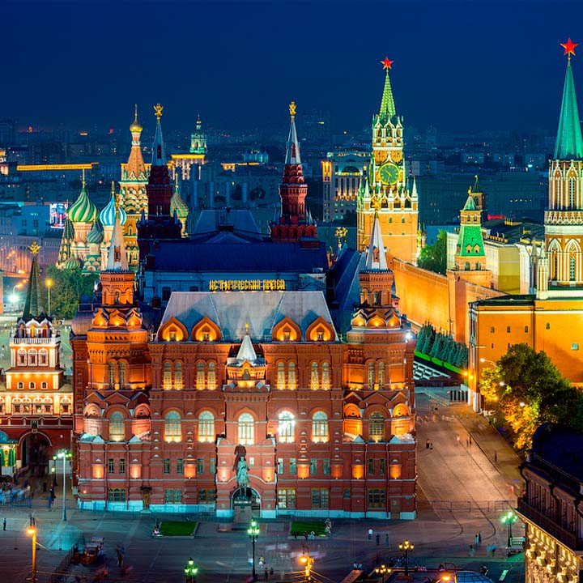

|  |
МоскваМосква – столица России, многонациональный город на Москве-реке в западной части страны. В его историческом центре находится средневековая крепость Кремль – резиденция российского президента. На ее территории можно посетить Оружейную палату, где выставляются драгоценные предметы, принадлежавшие царской семье. |
|
Сабор Василия бложенногоСобо́р Покрова́ Пресвято́й Богоро́дицы, что на Рву — православный храм на Красной площади в Москве, памятник русской архитектуры. Строительство собора велось с 1555 по 1561 год. Собор объединяет одиннадцать церквей, часть из которых освящена в честь святых, дни памяти которых пришлись на решающие бои за Казань |